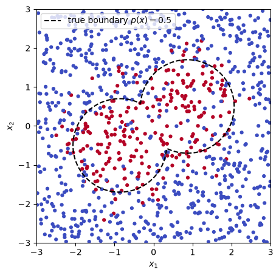

import numpy as np
import matplotlib.pyplot as plt
from scipy.special import expit
from sklearn.tree import DecisionTreeClassifier
from sklearn.ensemble import RandomForestClassifier, GradientBoostingClassifier
class DividingCellWorld:
"""Two features, uniform on a square; p(x) = P(y = 1 | x) is high inside the union of two slightly
overlapping circles (a cell undergoing division), low outside."""
def __init__(self, radius=1.2, separation=1.0, angle=np.pi / 6, sharpness=4.0, box=3.0):
self.radius, self.sharpness, self.box = radius, sharpness, box
direction = np.array([np.cos(angle), np.sin(angle)])
self.centers = np.array([-separation * direction, separation * direction]) # 2 * separation apart
def _scaled_distance(self, X):
"""Distance to the nearest center, divided by the radius; equals 1 on the boundary."""
dists = np.linalg.norm(X[:, None, :] - self.centers[None, :, :], axis=2)
return dists.min(axis=1) / self.radius
def true_prob(self, X):
return expit(self.sharpness * (1 - self._scaled_distance(X)))
def simulate(self, n, seed=None):
rng = np.random.default_rng(seed)
X = rng.uniform(-self.box, self.box, size=(n, 2))
y = rng.binomial(1, self.true_prob(X))
return X, y
def grid(self, resolution=150):
"""A grid of feature vectors covering the square, for drawing boundaries."""
g = np.linspace(-self.box, self.box, resolution)
x0, x1 = np.meshgrid(g, g)
return x0, x1, np.column_stack([x0.ravel(), x1.ravel()])
def plot_true_boundary(self, ax, **kwargs):
x0, x1, G = self.grid()
kwargs = {"colors": "k", "linestyles": "--", **kwargs}
ax.contour(x0, x1, self.true_prob(G).reshape(x0.shape), levels=[0.5], **kwargs)
def plot_boundary(model, world, ax, color="C1", label=None, resolution=150, **kwargs):
"""Draw the decision boundary of any fitted classifier (the curve where model.predict changes)."""
x0, x1, G = world.grid(resolution)
pred = model.predict(G).reshape(x0.shape)
ax.contour(x0, x1, pred, levels=[0.5], colors=color, **kwargs)
if label is not None:
ax.plot([], [], color=color, label=label)
world = DividingCellWorld()
X_train, y_train = world.simulate(1000, seed=1)
X_test, y_test = world.simulate(5000, seed=2)
fig, ax = plt.subplots(figsize=(5.5, 5))
ax.scatter(X_train[:, 0], X_train[:, 1], c=y_train, cmap="coolwarm", s=12)
world.plot_true_boundary(ax)
ax.plot([], [], "k--", label="true boundary $p(x) = 0.5$")
ax.set_xlabel("$x_1$"); ax.set_ylabel("$x_2$"); ax.set_aspect("equal"); ax.legend(loc="upper left")
plt.show()